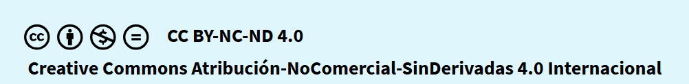

CRÉDITOS
las personas encargadas de este tema y el diseño son los alumnos de 4A de el instituto de la veracruz:
- Santiago Alonso Amayo
- Juan Carlos Villano Mendoza
- Miguel Angel Cortez Garcia
Y tambien a la maestra Alejandra Lopez Mendez por la supervision de este proyecto. El trabajo se protege bajo la licencia Creative Commons que se muestra a continuación:

Considerando lo anterior, usted es libre de:
- Compartir, copiar y redistribuir el material en cualquier medio o formato
- Adaptar, remezclar, transformar y construir a partir del material
- El licenciante no puede revocar estas libertades en tanto usted siga los términos de la licencia
Bajo los siguientes terminos:
- Atribución: Usted debe dar crédito de manera adecuada, brindar un enlace a la licencia, e indicar si se han realizado cambios. Puede hacerlo en cualquier forma razonable, pero no de forma tal que sugiera que usted o su uso tienen el apoyo de la licencianta.
- No Comercial: Usted no puede hacer uso del material con propósitos comerciales.
- Compartir Igual: Si remezcla, transforma o crea a partir del material, debe distribuir su contribución bajo la misma licencia del original.
- No hay restricciones adicionales: No puede aplicar términos legales ni medidas tecnológicas que restrinjan legalmente a otros a hacer cualquier uso permitido.